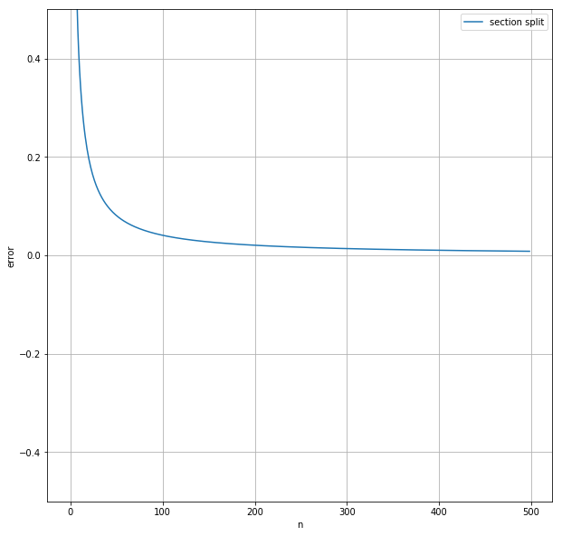
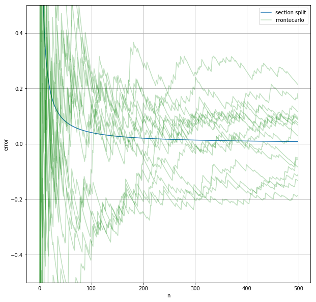
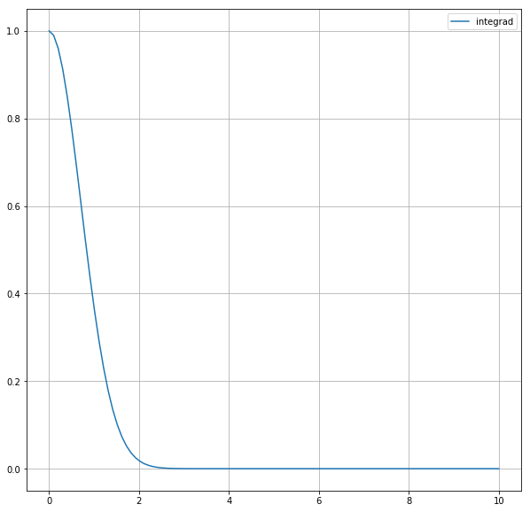
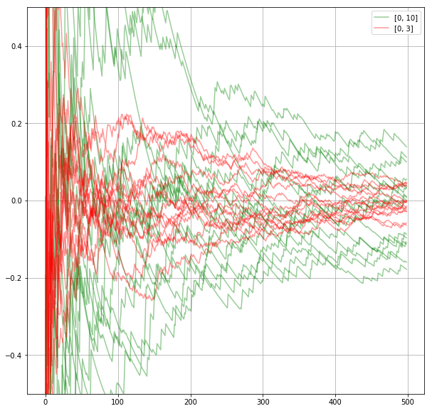
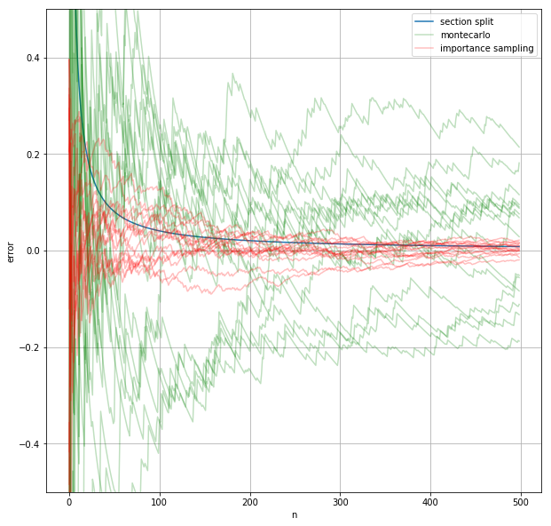

モンテカルロ積分
積分
\[ \int_0^{10} e^{-x^2}dx = 0.886227... \]
を、計算で求めることを考える。
(近似値は wolfram alpha で計算した)
まず被積分関数と答えを定義する。
from math import exp
# 被積分関数
f = lambda x: exp(-x**2)
# 答え
answer = 0.886227
次にipython用の初期設定をする。
# 記事の中で使うのモジュールのインポート
%matplotlib inline
import random
from math import sin, cos, exp, log
import numpy as np
import matplotlib.pyplot as plt
区間分割
まず、
\begin{align} & \int_a^b f(x) dx = \lim_{n \to \infty} \frac{b - a}{n} \sum_{i=0}^{n} f(a + (b - a)\frac{i}{n}) \end{align}を使って値を求める。
def section_split(f, a, b, n):
sum = 0
for i in np.linspace(a, b, n):
sum += f(i)
return (b - a) / n * sum
# 誤差を求める
section_split(f, 0, 10, 1000) - answer
0.004113698527303256
近い値が求められている。
nと誤差の関係をグラフにプロットしてみる。
fig, ax = plt.subplots(figsize=(10, 10))
ax.hold(True)
ax.grid(True)
ax.set_xlabel("n")
ax.set_ylabel("error")
ax.set_ylim(-0.5, 0.5)
n = 500
ax.plot([section_split(f, 0, 10, n) - answer for n in range(1, n)], label="section split")
ax.legend()
fig

利点
- コーディングが簡単
- 近似の精度が(\(n\)に対して)良い
欠点
- 計算を途中で打ち切ることができない
- 変数の数が多い場合計算量が大きい
- \(k\)個の変数について\(n\)個の区間に分割した場合、積分する関数の計算は\(n^k\)回必要になる
- 同じ\(n\)に対して同じ値しか返さない
- 計算精度などの関係で\(n\)の上限が決まっているとき、精度の上限も決まってしまう。
モンテカルロ
関数に渡す値を順番に選ぶ代わりにランダムに取る方法。
def montecarlo(f, a, b, n):
sum = 0
ans = []
for i in range(1, n):
sum += f(random.uniform(a, b))
ans.append(sum / i * (b - a) - answer)
return ans
誤差の変化をさっき書いたグラフに上書きする。乱数を用いているので、何回か近似を行ってそれぞれについての誤差の変化をプロットする。
ax.plot(montecarlo(f, 0, 10, n), label="montecarlo", color="g", alpha=0.25)
for i in range(14):
ax.plot(montecarlo(f, 0, 10, n), color="g", alpha=0.25)
ax.legend()
fig

モンテカルロ法で近い値が求まっているが、区間分割法ほど精度が高くないことが分かる。
利点
- コーディングが(多変数の場合でも)簡単
- 途中で計算を打ち切れる
- 制限時間は10分だと言われれば10分全て使いきれる
- 粗い近似がすぐに求まる
欠点
- 近似の精度が悪い
- 関数の形によっては\(n\)を大きくしても精度がほとんど向上しないことがある
- 関数の一部だけが大きな値を取るときなど
- 今回の関数も多少当てはまる。誤差が突然大きくなったり小さくなったりしている点がグラフにいくつかある。
- 関数の一部だけが大きな値を取るときなど
重点サンプリング
今考えている被積分関数\(e^{-x^2}\)は\(x=0\)の近くで大きな値を取り、\(x \geq 3\) の部分ではごく小さな値しか取らない。
fig2, ax2 = plt.subplots(figsize=(10, 10))
ax2.plot(np.linspace(0, 10, 100), [f(x) for x in np.linspace(0, 10, 100)], label="integrad")
ax2.legend()
ax2.grid()
fig2

そのため\(x=0 \to 10\) の積分と \(x=0 \to 3\) の積分の値の差は小さい。つまり、モンテカルロ法で\(x=0 \to 10\)の積分を求めるとき、変数を\([0, 10]\)からとる代わりに\([0, 3]\) からとっても答えはあまり変わらない。
それどころか、そうしたほうが\(n\)の値が相対的に大きくなって近似の精度が良くなることが予想できる。
実際そうなることを確かめる。
fig3, ax3 = plt.subplots(figsize=(10, 10))
# [0, 10]から取る
ax3.plot(montecarlo(f, 0, 10, n), label="[0, 10]", color="g", alpha=0.4)
for i in range(14):
ax3.plot(montecarlo(f, 0, 10, n), color="g", alpha=0.4)
# [0, 3]から取る
ax3.plot(montecarlo(f, 0, 3, n), label="[0, 3]", color="r", alpha=0.4)
for i in range(14):
ax3.plot(montecarlo(f, 0, 3, n), color="r", alpha=0.4)
ax3.legend()
ax3.grid()
ax3.set_ylim(-0.5, 0.5)
fig3

このことを一般化すると、「被積分関数が大きい値を取るところから変数を多くとったほうが精度が上がる」ことが分かる。つまり、完全に一様な分布ではなくて被積分関数と似た分布から変数\(x\)をとって\(f(x)\)を求める方が望ましい。
このことを実現するには、ある分布が与えられたときにその分布に従うような乱数を(無数に)出力する手続きが必要となるが、これは別の記事で書くことにする。結論だけ書くと、「ある関数 \({\it pdf}(x)\)の不定積分とその逆関数が解析的に求まるならば、\(x\)が選ばれる確率が\({\it pdf}(x)\)に比例する乱数を一様乱数から作ることができる」となる。
以下の例では変数が \(x \in [0, 10]\) の値を取る確率が \( {\it pdf}(x) = e^{-x} \) に比例するようにしている。ここで \(e^{-x}\) を選んだのは、この関数が被積分関数に似ていて、かつ不定積分とその逆関数が簡単に求まるからだ。
\( {\it pdf}(x) \) は被積分関数と似ている方が良くて、被積分関数と同じなのが理想だ。しかし、\( {\it pdf}(x) \) として被積分関数を取れるなら、それは積分を解析的に求められることを意味するので数値で近似する意味がない。
pdf = lambda x: exp(-x) / (1 - exp(-10)) # pdf(x) : 自分で考える/正規化もする
cdf = lambda x: (1 - exp(-x)) / (1 - exp(-10)) # cdf(x) : pdf(x)を[a, x]で積分したもの
cdf_inv = lambda x: -log(1- (1 - exp(-10)) * x) # cdf_inv(x) : cdf(x) の逆関数
def importance_sampling(f, a, b, n):
sum = 0
ans = []
for i in range(1, n):
x = cdf_inv(random.random())
sum += f(x) / pdf(x)
ans.append(sum / i - answer)
return ans
ax.plot(importance_sampling(f, 0, 10, n), label="importance sampling", color="r", alpha=0.25)
for _ in range(14):
ax.plot(importance_sampling(f, 0, 10, n), color="r", alpha=0.25)
ax.legend()
fig

グラフより、一様分布を使ったモンテカルロ法と比べるとこの方法を用いた方が近似値のブレが少なく、近似値の精度も高まることが分かる。
参考文献
Physically Based Rendering, Third Edition, Chapter13 "Monte Carlo Integration"
Ray Tracing: The Rest Of Your Life (Ray Tracing Minibooks Book 3), Chapter2 "One Dimentional MC Integral"